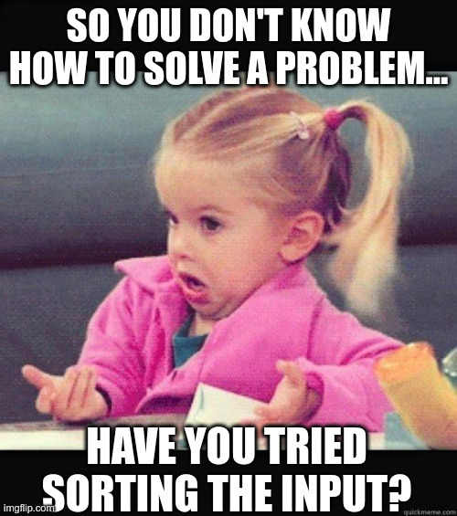
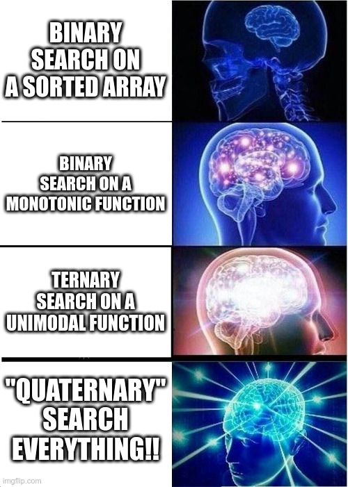
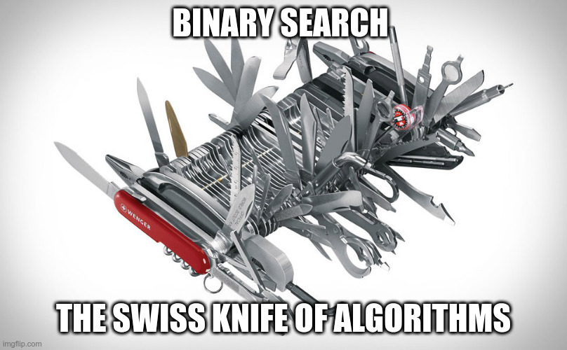

Sorting, binary search, ternary search, bisection · Problems: Weekly Problems #03
Counting sort never compares two values: it counts how many times each value occurs and writes them back in order, in O(n + k) for values in a range of size k. Switch to merge sort or quicksort and compare the counters.
Counting sort of 3 1 4 1 5 9 2 6: counts for 1 to 9 are 2 1 1 1 1 1 0 0 1, giving 1 1 2 3 4 5 6 9.
Besides the evaluation problems, here are some more suggestions:



Content by Pedro Ribeiro (DCC/FCUP), migrated from www.dcc.fc.up.pt/~pribeiro/aulas/pc2627/week03.html to demonstrate the UC Design Kit.